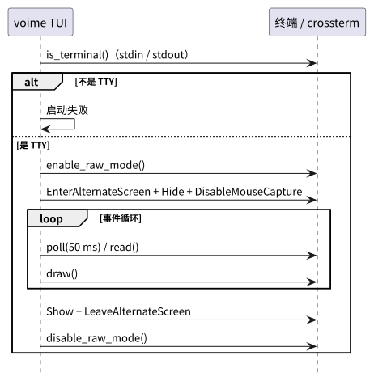

根：README USER CORE PROVIDER BUILD ｜ 本组件：README USER CORE BUILD
本文只记录 voime 消费的终端与 OS 诊断子集。协议与 daemon 不属于 provider；
它们分别由 voime-ipc USER 与 voimed USER 定义。
| 术语 | 定义 |
|---|---|
| TTY | 交互式终端；TUI 要求 stdin 与 stdout 都是 TTY。 |
| raw mode | 关闭行缓冲 / 回显 / 信号处理的终端模式；TUI 按键读取依赖它。 |
| 备用屏幕 | 终端的 alternate screen；退出后恢复原屏幕内容。 |
| ANSI / SGR | 终端颜色与样式控制序列；调色板用 SGR 91 表示 bright red。 |
| XDG | Linux 用户配置 / 数据 / runtime 目录约定；doctor 读取 XDG_CONFIG_HOME / HOME。 |
/proc | Linux 进程信息文件系统；doctor 用它判断 fcitx5 是否运行。 |
fcitx5-configtool 配置目录 | ~/.config/fcitx5/conf/voime.conf；doctor 只读检查。 |
| 约定 | 内容 |
|---|---|
| TUI 专用 | 只有 TUI 使用 crossterm raw mode / 备用屏幕；ctl / doctor 不改变终端模式。 |
| 终端恢复 | 正常退出、错误与 panic 都必须恢复光标、备用屏幕与 raw mode。 |
| 颜色 | 只使用终端默认前景 / 背景与一个 red 语义色；不假设真彩色。 |
| 鼠标 | 显式关闭鼠标捕获，保留终端原生选择。 |
| doctor 只读 | 不启动 / 停止进程、不写配置文件、不打开音频流。 |
| 路径 | doctor 默认检查模型根目录、active 与 /usr、/usr/local；自定义前缀不属于自动检查。 |

Drop 走同一恢复路径，避免终端留在 raw mode。| 消费项 | 签名 / 类型 | 用途 |
|---|---|---|
| TTY 检查 | std::io::IsTerminal::is_terminal() | 仅在 TUI 启动时检查 stdin / stdout。 |
| raw mode | terminal::enable_raw_mode() / disable_raw_mode() | TUI 按键读取与恢复。 |
| 备用屏幕 | EnterAlternateScreen / LeaveAlternateScreen | 退出后恢复终端内容。 |
| 光标 / 鼠标 | Hide / Show，DisableMouseCapture | 隐藏光标，保留终端原生选择。 |
| 尺寸 / 事件 | event::poll() / event::read() | 50 ms 轮询按键与 resize。 |
voimed 不要求 TTY、不启用 raw mode；只有 voime TUI 使用 crossterm。| 检查 | 来源 | 用途 |
|---|---|---|
| fcitx5 进程 | /proc/<pid>/comm | doctor 判断 Fcitx 是否运行。 |
| addon 描述 | /usr/share/fcitx5/addon/voime.conf 或 /usr/local/... | doctor 检查 addon 安装。 |
| addon 库 | /usr/lib/fcitx5/voime.so 或 /usr/local/... | doctor 检查 ABI / 安装路径。 |
| 旧输入法条目 | /usr/share/fcitx5/inputmethod/voime.conf | 存在则 FAIL，提示重新安装 / 删除。 |
| 用户配置 | XDG_CONFIG_HOME/fcitx5/conf/voime.conf 或 ~/.config/... | 无配置时 WARN，使用默认 Mode / Hotkey。 |
| 错误 | 触发条件 | 处理 |
|---|---|---|
| stdin / stdout 不是 TTY | stdin / stdout 不是 TTY。 | TUI 启动失败，stderr + 退出码 1；daemon 不受影响。 |
| 终端 I/O 错误 | raw mode / 备用屏幕 / 绘制失败。 | 尽力恢复终端；退出码 1。 |
| 连接失败 / 超时 | daemon 未启动、端点错误、等待超时。 | stderr + 退出码 1；不修改 daemon。 |
| doctor FAIL | 端点、daemon、模型、音频或前端检查失败。 | 打印 FAIL 项；退出码 1。 |
| doctor WARN | 用户配置缺失、前端未连接等非致命项。 | 继续；退出码仍可为 0。 |